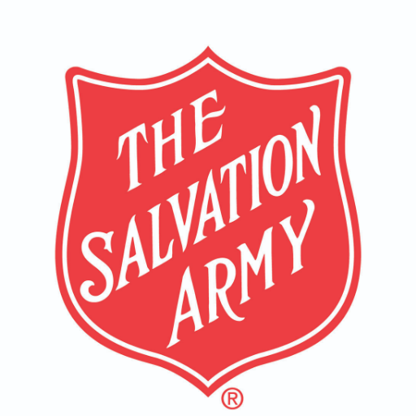
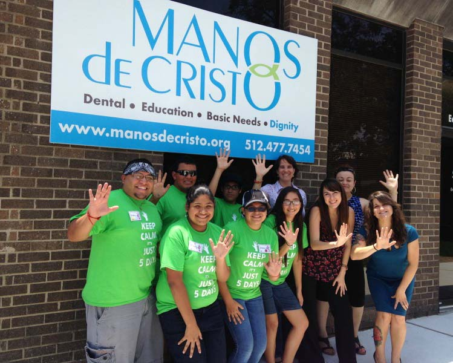
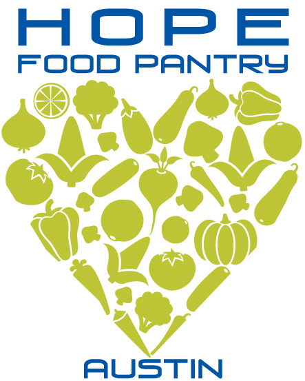

Clothing Resources
Throughout the Austin area are a variety of clothing resources as well as thrift shops and clothes at very low costs. Below are a few of them! For more information on the below mentioned areas, make sure to check out their website.

The Salvation Army
The Salvation army “wishes to bring salvation to the poor, destitute, and hungry by meeting both their physical and spiritual need.” The Salvation Army has stores all around the country, including Austin. It runs charity shops, provides clothes, operates shelters for the homeless as well as those who had experienced a natural disaster and have nowhere to stay, and humanitarian aid in developing countries.

Manos de Cristo
Hope Closet in an extension to the Hope food pantry, providing clothes that are in good condition for all ages.

Hope Closet